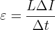

Основные формулы по теме магнетизм
Сила Лоренца
где B - вектор индукции магнитного поля, q - электриечский заряд, - скорость электрона и α - угол к линиям B со стороны магнитного поля.
Сила Ампера
где I - сила тока, α - угла между проводником и вектором индукции
Вектор индукции магнитного поля
где - магнитная постоянная, равная Тл*м/A, R - расстояние до проводника
Ускорение частицы
по 2 закону Ньютона ma=F, в данном случае ускорение а находится через силу Лоренца
Радиус окружности
радиус R окружности находится через определение центростремительного ускорения на основе кинематики
Период T обращения частицы по окружности
Магнитный поток
Ф = ВScos α [Вб] , где S площадь, а α угол между векторами и нормалью
ЭДС индукции
E=-dф/dt ,где dф - изменение магнитного потока, а dt - времени
E=-Ndф/dt ,где N - колличиство витков в катушке
Индуктивность
Ф=LI ,где L - индуктивность [Гн]
L=Ф/I

Энергия магнитного поля
Работа ЭДС самоиндукции
где заряд q = сила тока I умножить на изменение времени t, далее выражаем эдс из формулы выше